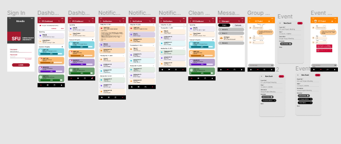

Moodle App Improved Prototype

• Developed theoretical and practical knowledge in UI/UX design by conducting heuristic evaluations, writing design scenarios for the Moodle e-learning application.
• Collaborated in a group of three to design improvements to the Moodle application.
• Used Figma to create a high-fidelity prototype to improve the Moodle application, which helped me achieve a A- in the course.